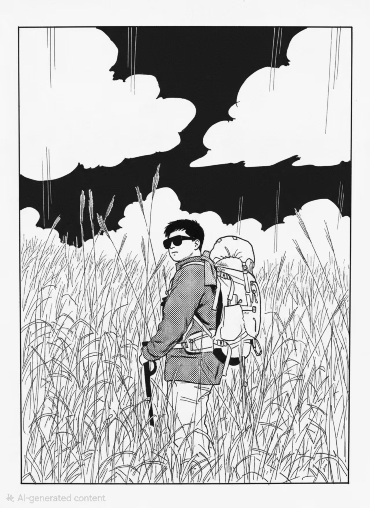

TAN TU XUAN
Hi, I'm Tan, and I am a university student majoring in Artificial Intelligence, with a strong interest in technology, creativity, and interactive experiences. Beyond my academic studies, I enjoy exploring how technology can be transformed into something people can experience, interact with, and remember. Game development gives me an opportunity to combine my technical background with my creative interests.
As a Designer, I focus on shaping the overall experience of a game. I am interested in level design, visual atmosphere, player interaction, and the small details that make a game world feel coherent. I believe good design is not simply about making something look interesting, but about creating a clear connection between the player, the environment, and the story.
Outside of development, I have always been interested in stories, history, culture, and the world around me. I enjoy visiting museums, exploring unfamiliar places, and learning about different cultures. Being a Malaysian Chinese student studying in China has also given me the chance to experience different perspectives and environments, which often becomes a source of inspiration for my creative ideas.
I also enjoy photography, travelling, hiking, and exploring new experiences. I like walking through unfamiliar places rather than simply following the usual tourist routes. Sometimes, a small detail—a strange building, an old street, a piece of music, or a conversation with someone—can become an unexpected source of inspiration. I think these experiences have taught me to observe the world more carefully.
Perhaps the most important thing about me is that I enjoy connecting seemingly unrelated ideas. Artificial intelligence, games, music, history, and everyday life may seem like completely different subjects, but I believe creativity often comes from putting different things together. Through game development, I hope to turn these observations and ideas into experiences that other people can explore, interact with, and remember.
ROLE
Designer, Audio, Writer
MAIN TASKS
Designing game assets, Composing background music, Writing storylines and dialogue
CONTRIBUTION
Delivered a deeply immersive and emotionally resonant player experience